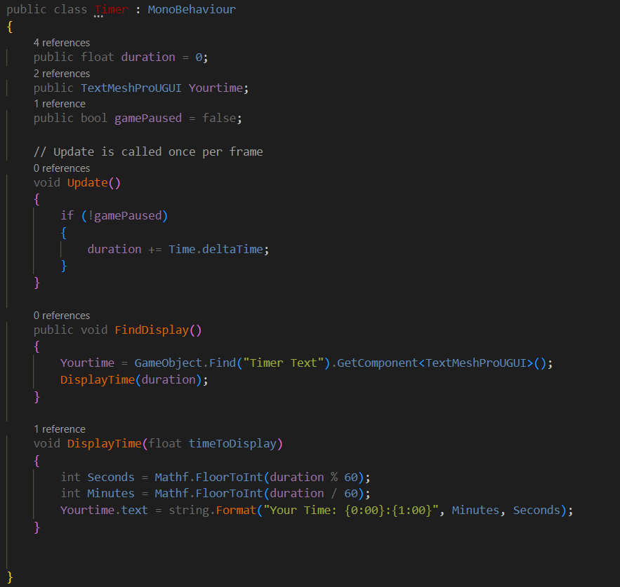
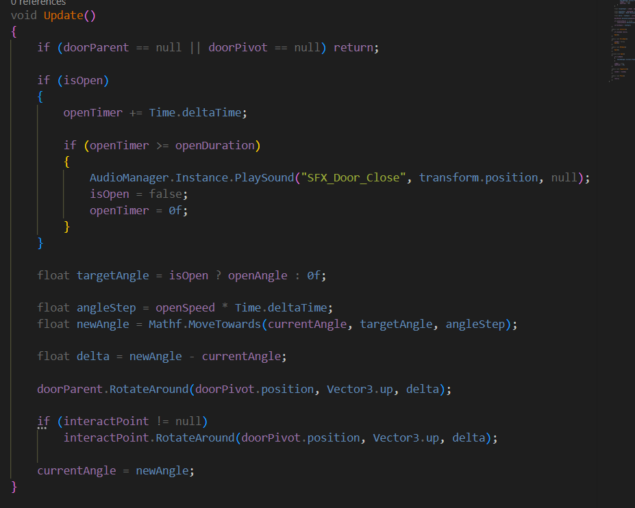

Reflective Report
Part 1: Client Project 1 (Term 1)
3. Interpreting Requirements (Project 1)
4. Development and Iteration (Project 1)
5. Teamwork and Contribution (Project 1)
6. Evaluation and Reflection (Project 1)
Part 2: Client Project 2 (Term 2)
8. Interpreting Requirements (Project 2)
9. Development and Iteration (Project 2)
11. Evaluation and Reflection (Project 2)
Part 3: Cross-Project Analysis
12. Development Across the Year
13. Professional Practice and Decision-Making
14. Value, Responsibility and Wider Impact
Appendix A – Slackers Planning Documentation
Appendix B – Slackers Gameplay Systems
Appendix C – Slackers GitHub and Workflow Evidence
Appendix D – Quebec Underground Planning
Appendix E – Quebec Underground Gameplay Systems
Appendix F – Quebec Underground Iteration and Testing
This report is to reflect on my learning, development and activities across two client projects worked on during the academic year. The report assess how I interpreted client requirements, contributed to collaborative game development and developed my technical and professional skills through practical project work. Throughout both projects I worked within a team environment using industry style workflows, iterative development and client feedback to create playable game prototypes.
Client project 1, Slackers focused on the development of a humorous sabotage based prototype where players controlled alien characters infiltrating a human workplace through fake temp agency. The project was meant to showcase chaotic gameplay systems, sabotage mechanics and cooperative interactions within a small prototype scope. My main role was focused on gameplay programming and technical implementation using Unity (Unity Technologies, 2026). This included interaction systems, sabotage mechanics, debugging and gameplay testing. I also helped to project organisation through GitHub (GitHub, 2026) version control, Discord (Discord, n.d) communication and early sprint planning.
Although the project showed successful gameplay systems and technical implementation, the prototype was never fully completed to the original scope. One of the main challenges during the project was time management, due to multiplayer implementation being delayed until the later stages of development. This reduced opportunities for larger playtesting and lessened the amount of gameplay feedback received during the production process. However, these issues allowed me to gain experience in cooperative teamwork, debugging, workflow management and identifying weaknesses in my production planning and scope management.

Figure 1. gameplay prototype from Slackers
Source: own screenshot from unity,2025.
Client Project 2, Quebec Underground changed towards a structured survival horror game focused on tension, evasion and an unkillable AI system. The project explored how an unkillable enemy could remain fair, readable and engaging through level design, unpredictability and iterative development. Unlike Slackers, my role during this project became more focused on production and project organisation whilst continuing development work. Responsibilities included production planning, task management using Ora (Ora, 2026), cooperative brainstorming through Miro (Miro, 2026), documentation support, communication with both the development team and client and assisting in gameplay implementation inside Unity (Unity Technologies, 2026).

Figure 2. Quebec Underground environment
Source: own screenshot from Unity, 2026
Through Quebec Underground, communication became one of the largest production challenges. Multiple team members experienced personal circumstances during the development of the game, which sometimes disrupted communication, morale and production coordination. This increased pressure on project organisation and needed more adaptability when managing tasks, documentation and development priorities. However compared to Slackers production workflow still became more structured and organised through clearer task management, documentation and task tracking. These experience improved my confidence with professional workflow, cooperative planning and decision making within a team environment.

Figure 3. production planning used during Quebec Underground
Source: own screenshot from Miro,2026
Across the academic year my role and approach to development changed significantly. While Slackers focused largely on gameplay programming and technical implementation, Quebec Underground showed better production management, planning, communication and iterative development. These experiences helped my understanding of cooperative game development, production pipelines, task priorities and professional workflow within the games industry.
This report looks at both projects through reflective evaluation, development evidence and production documentation to show how my technical, organizational and professional skills developed throughout the academic year. My evidence with include prototypes, planning documents, screenshots, task management, iterations and feedback which will be referenced throughout the report to support my reflection.
Client project 1, Slackers focused on the development of a humorous sabotage based multiplayer prototype where players controlled alien operatives as temporary workers inside a human workplace. The client brief required teams to create a small but polished gameplay prototype centred around causing disruption while avoiding detection. The brief encouraged creative interpretation within the development scope. The team selected an office environment as the main setting because it allowed for interesting office assets to be made as well as be a recognisable workplace and plenty of opportunities to create sabotage mechanics through environmental interactions.
My main role within the project focused on gameplay programming and technical implementation using Unity (Unity Technologies, 2026). Responsibilities included creating player interactions, gameplay mechanics, UI systems, debugging and helping with multiplayer gameplay functionality. Whilst doing development work I also worked on sprint planning, GitHub (GitHub, 2026) version control and communication through Discord (Discord, n.d.) and in person meetings.
During the early planning stages the team focused on identifying core gameplay that the client brief needed. The original idea had task based sabotage mechanics, object interactions, AI behaviour and multiplayer gameplay. Early cooperative planning meetings were organised using whiteboard planning and milestone scheduling to divide responsibilities and see achievable goals within the projects timeframe.

Figure 4. Early cooperative planning and role assignment for Slackers
Source: Own photograph from development planning session. 2025
The project aimed to create a gameplay loop where players could interact with workplace objects (e.g. plant pot, printer and fish bowl), complete sabotage tasks and avoid punishment from the manager player. However, as development progressed time management became one of the main production challenges especially when it came to multiplayer implementation and gameplay balancing.
Despite the project not being fully completed to the original scope, Slackers did show multiple core gameplay systems and gave me experience in cooperative development, gameplay programming, debugging and production workflow.

Figure 5. Early gameplay prototype from Slackers
Source: Own screenshot from Unity, 2025
The first stage of development involved analysing the client brief and identifying gameplay systems required to create the sabotage gameplay loop. One of the main requirements found from the brief was creating gameplay systems that allowed players to interact with the environment in funny and disruptive ways. Another requirement was ensuring that the prototype stayed functional and playable within the development scope.
The project was broke into smaller gameplay, some of these systems were player movement, object interaction, sabotage tasks, AI behaviour, multiplayer network and UI systems. My tasks focused on gameplay programming, player interaction system and technical implementation inside Unity.
Cooperative whiteboard planning sessions were used to assign tasks and organise development priorities. These sessions helped the team identify achievable milestones and distribute responsibilities between programming, art and environmental work.
Figure 6. Gameplay system planning and task allocation during early production
source: own photograph from development planning session, 2025
To support production planning I created a Gantt chart which organized development tasks across multiple weeks. This planning showed responsibilities for player systems, multiplayer research, environment development, UI system and gameplay interactions.

Figure 7, production timeline and milestones planning for Slackers
source : own project planning document. 2025
During development GitHub was used as the version control platform to organise updates and keep everyone’s work together (GitHub, 2026). Folder were separated into categories such as controllers, events, menus and gameplay systems to keep organisation throughout development.

Figure 8. Organised folders used during development
Source: own screenshot from Unity, 2025
One of the earliest gameplay systems implemented was the interaction and sabotage systems. The interaction system used raycasting to allow players to interact with assets, trigger sabotage mechanics and move assets in the environment. The interaction system aligned with the client requirements of creating workplace disruption through gameplay interactions.
The planning stage also should multiple weaknesses in my early production workflow. Originally planning focused more on implementing gameplay systems rather than playtesting and iterative feedback. This later affected balancing and multiplayer testing because some systems were implemented before the gameplay loop had been fully created.
Despite these weaknesses, the planning stage improved my understanding of turning client requirements into achievable gameplay systems while making sure scope, deadlines and cooperative development is balanced.
Development for Slackers focused on gameplay interaction systems, sabotage mechanics and multiplayer gameplay. My main responsibilities during development involved programming interaction systems, gameplay mechanics, menu systems and debugging my gameplay functions using Unity.
One of the main gameplay systems used was the task interaction system and grabbing interface. These systems allowed players to pick up and move objects to create sabotage interactions during gameplay. The mechanic used Unity raycasting and rigidbody movement to allow player to interact with assets in the environment.
Early versions of the gabbing system caused held objects to feel unstable and visually disconnected from the player due to rigidbody movement and collision behaviour. To improve this issue, I used Vector3.Lerp and Rigidbosy.MovePosition to move the assets smoothly towards the players grab point. This reduced vidual jitter and improved gameplay readability during interactions.

Figure 9. Rigidbody and object grabbing scripts
Source: own code from visual studio, 2025
The interaction system also helps sabotage tasks through object state changes. The changeable script allowed assets to visually change when interacted with. This helped communicate sabotage progression to the player.
Another gameplay system used during production involved a timer function and end condition function. The timer script controlled the round progression and triggered a game end condition once the timer reached zero. Some other systems I made included health management and a manager shooting mechanic. These mechanics allowed the manager player to damage the Alien players through a raycast shooting system.

Figure 10. Sabotage interaction in Unity
Source: Own code in Unity , 2025
One challenge throughout development was the multiplayer implementation. Multiplayer was not originally my responsibility within the team. However, I later assisted another team member during implementation and debugging when networking began to affect progress. The multiplayer system used Unity Netcode to support hosting and client connections through lobby functions. Ownership checks were also implanted to make sure only local players controlled movement and camera systems. This prevented supplicate cameras and conflicts during multiplayer.
Despite multiple attempts to improve the networking system the multiplayer function was never fully implemented to a playable state. Various technical issues came one specifically being network behaviour not allowing two computers to connect, this lead to multiplayer not being fully completed within the remaining production time. Due to multiplayer gameplay forming a large part of the original concept these issues reduced opportunities for gameplay testing and iterations in the later stages of production.
Although the multiplayer system was not successful assisting with implementation and debugging improved my understanding of cooperative workflow, networking systems and problem solving within a team environment. The experience also showed my the importance of realistic production planning and implementing technically difficult system earlier in development rather than leaving them until later stages of production.

Figure 11. Multiplayer Lobby
Source: own screenshot from Unity, 2025
The menu and UI systems were also implemented to help the prototype structure rather than to show visual iteration. The MainMenu script controlled scenes by allowing the player to start game or quit the game, while the timer and end condition script helped with the game play structure. These systems were important because they gave the prototype a clearer structure with a begin, end and play scene. This made the prototype more testable even though the multiplayer system was not completed.

Figure 12. Main menu scene
Source: own screenshot from Unity game scene, 2025

Figure 13. Main Menu in Editor
Source: Own screenshot from Unity, 2025
Gameplay testing also showed collision issues involving rigidbody interactions and environmental assets. Some objects cause players to bounce unpredictably due to conflicting physics behaviour. Rather than creating a temporary fix. I adjusted the collider settings and rigidbody behaviour to improve gameplay and reduce unintended movement issues.
Throughout development GitHub commits were regularly used to track gameplay systems, UI implementation, debugging fixes and cooperative workflow.

Figure 14. GitHub commit history
source: Own screenshot from GitHub, 2025
Despite some successful gameplay systems being implemented the unfinished multiplayer function and time management issues limited the overall polish of the prototype. However the project did improve my confidence with gameplay programming, debugging, iterative development and cooperative workflow inside Unity.
Cooperation during Slackers relied on communication through Discord (Discord, n.d.), GitHub(GitHub, 2026), whiteboard planning sessions and in person discussions. Discord was mainly used for development updates and communication outside scheduled meetings, While in person meetings allowed for faster cooperative problem solving dure gameplay implementation.
During early production the team used cooperative planning sessions to organize gameplay ideas, divide responsibilities and establish development priorities. These planning sessions helped divide responsibilities of programming, design, UI systems, multiplayer implementation and gameplay mechanics.

Figure 15. Cooperative planning on whiteboard
Source: Own photograph from development planning, 2025
My personal contribution focused mainly on gameplay programming and technical implementation. This included interaction systems, grabbing mechanics , gameplay scripting, UI, debugging and assisting with multiplayer implementation later in development. I also attempted to keep organised script structures and clear gameplay systems so that other team members could more easily understand and access projects functions when needed.
GitHub became an important part of cooperative workflow management because it allowed development updates and gameplay systems to be tracked throughout production. Commit history showed regular implementation updates involving gameplay systems, menus, debugging and player functionality.

Figure 16. GitHub workflow and implementation
Source: Own screenshot from GitHub repository, 2025
One of the biggest production challenges during the project was time management. Multiplayer systems required significantly more implementation time than originally expected which delayed gameplay balancing and reduced the amount of playtesting. This showed weaknesses in early scope management and milestone planning.
Communication remained mostly stable throughout the development. However as deadlines approached workflow became more focused on technical implementation rather than iteration and project management. This occasionally caused development to become less organised during the later production stages.
Despite these weaknesses, the project improved my understanding of cooperative workflow, teamwork, communication and gameplay production inside a shared development project. It also improved my confidence when working cooperatively on technical problems and debugging gameplay system with other developers.
One of the best parts of slackers was that I was able to successfully implement multiple gameplay systems that directly connect with the client brief. The project showed workplace sabotage through interaction systems, object movement and cooperative gameplay ideas. These systems helped create a good gameplay experience while keeping the humorous tone requested within the brief.
The project also significantly improved my technical development skills inside Unity. Through gameplay programming, debugging and multiplayer implementation I improved my understanding of rigidbody physics, raycast systems, networking concept and gameplay scripting. Systems like the grabbing mechanic, sabotage interactions, timer system and player movement controller improved my confidence with gameplay programming and technical problem solving.
However the project also showed multiple weaknesses in production planning and scope management. Multiplayer implementation became one of the larger technical challenges during development and was never fully completed into a playable state. Although multiplayer implementation was not originally my main responsibility, assisting another team member with debugging and networking support showed me how technically demanding multiplayer systems can become when implemented later in production.
The multiplayer issues largely reduced opportunities for gameplay testing sessions. This lead to much of the gameplay feedback received during development focused more on technical bugs and interaction issues rather than testing gameplay enjoyment or player balance.
Another weakness was the lack of iterative testing during earlier stages of production. Much of the early project focused on implementing gameplay systems before checking whether those systems were enjoyable and understandable for players. This gave us less opportunity to balance gameplay and iterate later in development.
Time management also became one of the largest personal challenges during the project. Although milestone planning and Gantt chart scheduling originally gave a timeline development priorities were not constantly updated as production changed. This made long term scheduling during later development stages more difficult.
Despite these weaknesses slackers became a valuable learning experience that helped my approach during Client Project 2. The project improved my understanding of gameplay programming, debugging, cooperative workflow, production planning and technical problem solving. It also showed me the importance of realistic scope management, continuous iteration, structured communication and implementing technically difficult systems earlier in production.
The challenges experienced during slackers also helped with my change from programming focused responsibilities towards production and organization working during client project 2. While I still enjoyed game play programming the project made me more interest in workflow management, Communication systems, production planning and cooperative organization within game development teams.
Client Project 2 focused on the development of Quebec Underground, a fast-paced survival horror prototype centred around environmental exploration, puzzle solving and evasion gameplay. The project was developed for PC using Unity and aimed to create tension through an unkillable creature that forced players to rely on awareness, movement and decision-making rather than combat (Red Rat Client Document, 2026).
Unlike Client Project 1 the project was planned with a much stronger focus on production workflow and scope control from the beginning of development. Early brainstorming sessions focused on identifying the core gameplay pillars, including tension, unpredictability, environmental storytelling and non-combat survival mechanics. The team wanted players to feel “constantly hunted” while still allowing gameplay to remain fair and readable through level design and AI behaviour (Red Rat Client Document, 2026).

FIGURE 17. EARLY GAMEPLAY AND ENVIRONMENT BRAINSTORMING
Source: Own photograph of team planning session, 2026.
The project also explored how environment design could directly support gameplay systems. Early discussions focused on maze-like underground layouts, looped corridors, safe rooms and environmental puzzles designed to encourage tension and exploration rather than scripted horror sequences.

FIGURE 18 . EARLY LEVEL LAYOUT AND MAP DESIGN CONCEPTS
Source: Own photograph, 2026.
My role during this project had changed from Slackers. While I still contributed technical implementation inside Unity my responsibilities became more production-focused. I was involved in production planning, backlog organisation, collaborative documentation and task management using Ora and Miro. I also contributed gameplay systems including player movement, interaction systems, hiding mechanics, pause systems and menu functionality.
Compared to Client Project 1 the production workflow was more organised. Ora backlog boards were used to separate development tasks into gameplay systems, puzzle implementation, sound design and environment production which improved task visibility and accountability throughout development.

FIGURE 19. ORA TASK MANAGEMENT BOARD USED DURING DEVELOPMENT
Source: Own screenshot from Ora, 2026.
This project became important in shaping my future interests within the games industry. While Client Project 1 focused on gameplay programming, Quebec Underground helped me develop stronger production, organisational and communication skills alongside technical implementation.
The project brief required the development of a horror prototype focused around a faster than the player enemy that could not be defeated. Rather than designing gameplay around combat systems the team focused on creating tension through environmental navigation, sound design and player vulnerability. The project specifically aimed to explore how a game could remain fair and enjoyable despite the creature being significantly stronger than the player (Red Rat Client Document, 2026).
During early planning sessions the team looked at how environmental design, AI behaviour and gameplay pacing could work together to create tension. One of the key requirements was ensuring the AI felt unpredictable without becoming unfair. This led to discussions surrounding line of sight, patrol routes, sound detection and safe spaces throughout the level.

FIGURE 20. EARLY AI AND GAMEPLAY REQUIREMENT PLANNING
Source: Own photograph of whiteboard planning session, 2026.
The project also required multiple interconnected gameplay systems including puzzle interactions, environmental navigation, hiding mechanics and sound-based gameplay. The team planned these systems collaboratively before implementation began in order to reduce production issues experienced during Client Project 1.
Early level design planning focused heavily on progression flow and player guidance. During brainstorming sessions the team discussed how loops and environmental landmarks could improve navigation while still maintaining tension and confusion inside the underground environment.

FIGURE 21. EARLY MAP LAYOUT ITERATION
Source: Own photographs of map planning and progression layouts, 2026.
The team also identified technical requirements during pre-production. These included:
first-person movement systems
interaction systems
AI state behaviour
hiding mechanics
sound management systems
puzzle systems
menu and UI systems
These tasks were separated into backlog categories inside Ora to improve workflow organisation throughout production.

FIGURE 21. GAMEPLAY AND DESIGN TASK BREAKDOWN
Source: Own screenshot from Ora, 2026.
Compared to Slackers, more time was spent checking the project scope and technical feasibility before full production began. The team made sure to limit the project to a single connected level and one creature AI system in order to maintain a realistic production scope within the 12 week development schedule (Red Rat Client Document, 2026).
This planning helped reduce feature creep and allowed development to focus more heavily on iteration and gameplay refinement rather than unfinished experimental mechanics.
Development of Quebec Underground followed a more iterative workflow than Client Project 1. Early production focused on implementing core gameplay systems before improving atmosphere, puzzles and AI behaviour through testing and feedback.
My main development contributions involved player systems, interaction mechanics and gameplay functionality inside Unity. One of the first systems implemented was the first-person player controller. This included walking, sprinting, crouching and movement restrictions designed to support stealth and tension-based gameplay. The player movement system intentionally slowed backpedalling and crouch movement to force commitment to player decisions and increase vulnerability during encounters (Red Rat Client Document, 2026).

FIGURE 22. PLAYER MOVEMENT SYSTEM IMPLEMENTATION
Source: Own code from FPCharacterController.cs, 2026.
I also helped with the interaction systems which allowed the player to interact with environmental objects, puzzles and doors throughout the map. These systems were built to remain reusable across multiple gameplay objects which improved scalability during development.
The hiding system was another important gameplay mechanic developed during production. Service tunnels and safe rooms allowed players to avoid the creature while maintaining tension through restricted visibility and environmental pressure (Red Rat client development, 2026).

FIGURE 23. PLAYER HIDING SYSTEM IMPLEMENTATION
Source: Own code from PlayerHideScript.cs, 2026.
Compared to Slackers development became much more iterative and feedback-driven. Systems were tested more consistently throughout production which allowed gameplay problems to be identified and refined earlier during development.
Production management became one of my main responsibilities during Quebec Underground. Unlike Slackers where production planning was less structured this project used a clearer development workflow involving task management systems, collaborative planning and organised backlog structures.
Ora became the main production management platform used throughout development. Tasks were divided into gameplay systems, game design, sound design and environmental production which improved organisation and progress tracking across the team.
FIGURE 24. ORA BACKLOG
Source: Own screenshot from Ora, 2026.
Miro was also used alot for collaborative planning, storing references and documenting gameplay ideas throughout development. This helped centralise production information and allowed the team to visualise development progress more effectively.
FIGURE 25. MIRO BOARD
Source: Own screenshot from Miro, 2026.
Communication mainly occurred through Discord, in-person meetings and collaborative planning sessions. Compared to Slackers communication became more specific during early production stages due to improved documentation and clearer task allocation.
However communication also became one of the largest challenges during the project. Multiple team members experienced personal circumstances throughout development which occasionally reduced communication consistency and affected production coordination. This sometimes slowed workflow progression and required more adaptability when reorganising tasks and priorities.
Despite these difficulties the backlog system helped maintain production visibility throughout development. Tasks could still be tracked, reassigned and prioritised even during periods where communication became inconsistent.
The project also improved my confidence in production management and collaborative organisation. I became more involved in planning discussions, production oversight and workflow coordination compared to Client Project 1 which helped my understanding of professional development pipelines within the games industry.
Quebec Underground showed major improvement in organisation, workflow management and gameplay iteration compared to Client Project 1. The project achieved a more polished prototype through stronger planning, clearer production structure and more consistent testing throughout development.
From a personal perspective this project showed major growth in both production management and professional confidence. Unlike Slackers where my contribution focused mostly on gameplay programming, Quebec Underground required me to balance technical implementation with planning, communication and organisational responsibilities.
The project also showed the importance of adaptability within collaborative development. Communication challenges caused by personal circumstances within the team occasionally disrupted workflow and coordination. However, stronger production planning and clearer task management helped minimise disruption compared to the issues experienced during Slackers.
One weakness that still remained throughout development was workload balancing. Managing both production responsibilities and gameplay implementation occasionally became difficult during periods of increased development pressure. Despite this, the project significantly improved my confidence with collaborative planning and professional workflow management.
Overall, Quebec Underground showed clear evidence of growth in technical implementation, organisation, iteration and production management compared to Client Project 1.
Across both client projects my technical skills, production understanding and professional confidence developed a lot. While Slackers focused heavily on gameplay programming and experimentation Quebec Underground demonstrated much stronger organisation, planning and production management throughout development.
One of the biggest improvements across the year involved workflow structure and project organisation. During Slackers planning was less formal and production issues such as multiplayer implementation delays affected later development stages. In contrast, Quebec Underground used backlog systems, collaborative planning tools and structured documentation to maintain clearer production visibility.
The difference between the two projects can be seen clearly through the development evidence. Slackers relied more heavily on informal whiteboard planning and reactive workflow decisions, whereas Quebec Underground used structured task boards, production tracking systems and collaborative planning documents throughout development.
FIGURE 26. COMPARISON BETWEEN EARLY TERM 1 AND TERM 2 PRODUCTION PLANNING
Source: Own photographs and screenshots, 2025–2026.
My technical implementation skills also improved throughout the academic year. During Slackers I mainly contributed interaction systems, timers and object mechanics. By Quebec Underground I became more confident implementing larger gameplay systems such as first-person movement, interaction frameworks and hiding systems.
The projects also influenced my future career interests. originally I focused mainly on gameplay programming, however Quebec Underground helped me realise stronger interest in production management, organisation and collaborative workflow planning within game development.
Overall, both projects contributed significantly toward my understanding of collaborative development pipelines, iterative workflow and professional communication within the games industry.
Professional practice became increasingly important throughout both projects. Both development processes required teamwork, technical problem solving, production planning and adaptability in order to deliver playable prototypes within limited timeframes.
One of the biggest improvements across the year involved decision-making and scope control. During Slackers, several gameplay systems were attempted simultaneously which contributed toward production delays later in development. In contrast, Quebec Underground intentionally limited project scope to focus on one enemy type, one playable environment and core gameplay systems only (Red Rat Client Document, 2026).
This decision allowed the team to prioritise gameplay quality and iteration rather than attempting large amounts of content within the available timeframe.
Production management decisions also improved between projects. Quebec Underground used structured backlog systems and collaborative planning tools to improve workflow visibility and reduce confusion surrounding responsibilities and deadlines.
Communication challenges throughout Project 2 also showed the importance of professionalism and adaptability within collaborative environments. Personal circumstances affecting team members required greater flexibility when redistributing tasks and reorganising production priorities.
Both projects improved my understanding of professional workflow management, collaborative communication and production decision making within game development.
Both client projects thought about wider issues surrounding accessibility, collaboration and responsible development practices throughout production. Digital collaboration tools such as Discord, Ora and Miro reduced reliance on physical documentation while improving accessibility and communication across the team.
The project also reflected Sustainable Development Goal 8 through collaborative digital production, technical skill development and practical teamwork experiences. The use of production management software, collaborative workflows and iterative development practices demonstrated professional industry environments and supported employability skill development.
The projects showed the importance of supporting wellbeing and professionalism within collaborative teams. Communication difficulties experienced during Project 2 reinforced the need for flexibility, patience and organisational support when working in team-based production environments.
Overall, both client projects improved my understanding of collaborative game development, technical implementation and production management. The academic year helped strengthen both my technical abilities and my professional confidence when working within a team environment.
One of my main improvements across the year involved adaptability. During Slackers my role focused mostly on gameplay programming and technical implementation comparted to Quebec Underground required significantly greater involvement in planning, production organisation and collaborative workflow management.
Technical problem solving also became a major area of development throughout both projects. Gameplay systems, interaction mechanics and debugging all required iterative testing and adjustment during production. These experiences improved my confidence using Unity and strengthened my understanding of gameplay system design.
The projects also showed weaknesses that still require improvement. Time management and production planning negatively affected Slackers, particularly surrounding multiplayer implementation delays. Communication difficulties during Quebec Underground also added to the importance of maintaining consistent organisation and documentation throughout collaborative projects.
Quebec Underground has influenced my future career interests in production management and organisation within game development. While I still enjoy gameplay programming, I became much more interested in workflow management, planning and communication throughout Project 2.
Overall, both projects provided valuable practical experience that improved my understanding of technical implementation, teamwork and professional production practices within the games industry.
Discord (n.d.) Discord | Your Place to Talk and Hangout. Discord. Available at: https://discord.com .
Mr-Wolfie616 (2025) GitHub - Mr-Wolfie616/Slackers-Client-Project: Slackers is a multiplayer game created using a client brief made by our university lecturer. GitHub. Available at: https://github.com/Mr-Wolfie616/Slackers-Client-Project .
Mr-Wolfie616 (2026) GitHub - Mr-Wolfie616/Quebec-Underground: Underground horror game is a stealth game based in an underground subway system. You task throughout the game is to escape this place, but be careful IT can hear you. GitHub. Available at: https://github.com/Mr-Wolfie616/Quebec-Underground .
Ora - Task management done right! (2026) Ora - Task Management Done Right! ora Available at: https://app.ora.pm/p/4b362523fd014882b30f65b4f0af4942?v=109748&t=k
Unity Technologies (2019) Unity - Unity. Unity. Available at: https://unity.com .
Wootton, K. (2021) Pre design board. Miro.com. Miro Available at: https://miro.com/app/board/uXjVGIykhVg=/ .
Figure 4. Early cooperative planning and role assignment for Slackers
Source: Own photograph from development planning session. 2025
Figure 6. Gameplay system planning and task allocation during early production
source: own photograph from development planning session, 2025
Figure 7, production timeline and milestones planning for Slackers
source : own project planning document. 2025
Figure 10. Sabotage interaction in Unity
Source: Own code in Unity , 2025
Figure 9. Rigidbody and object grabbing scripts
Source: own code from visual studio, 2025

Timer script
Source: own screenshot from visual studio,2026
Figure 12. Main menu scene
Source: own screenshot from Unity game scene, 2025
Figure 13. Main Menu in Editor
Source: Own screenshot from Unity, 2025
Figure 1. gameplay prototype from Slackers
Source: own screenshot from unity,2025.
Figure 14. GitHub commit history
source: Own screenshot from GitHub, 2025
Figure 8. Organised folders used during development
Source: own screenshot from Unity, 2025
Figure 16. GitHub workflow and implementation
Source: Own screenshot from GitHub repository, 2025
Figure 3. production planning used during Quebec Underground
Source: own screenshot from Miro,2026
FIGURE 19. ORA TASK MANAGEMENT BOARD USED DURING DEVELOPMENT
Source: Own screenshot from Ora, 2026.
FIGURE 17. EARLY GAMEPLAY AND ENVIRONMENT BRAINSTORMING
Source: Own photograph of team planning session, 2026.
FIGURE 22. PLAYER MOVEMENT SYSTEM IMPLEMENTATION
Source: Own code from FPCharacterController.cs, 2026.

Door script
Source: Own screenshot from visual studio, 2026
FIGURE 23. PLAYER HIDING SYSTEM IMPLEMENTATION
Source: Own code from PlayerHideScript.cs, 2026.